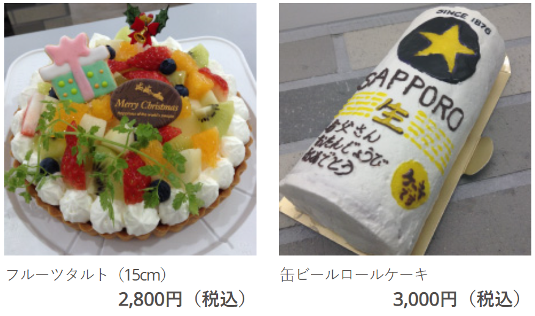
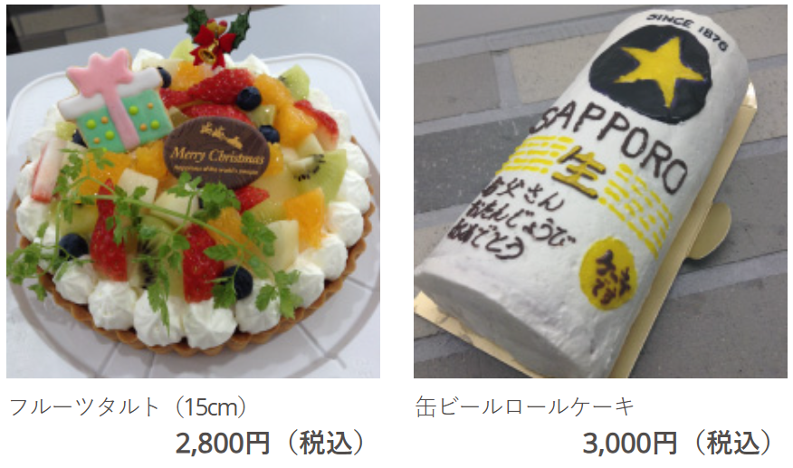

豊橋駅近くのカフェ５選
豊橋駅近くのカフェ 比較早見表
結果だけ知りたい方は表だけでOK！
豊橋のカフェの料金・メニューの量・ゆっくりできるかについて5段階評価で比較しました。
詳細は以下をご参照ください！
| カフェ名 | 料金 | メニュー | ゆっくりできるか |
|---|---|---|---|
| ノード | ★★★★★ | ★★★★★ | ★★★★★ |
| 珈琲とカヌレ | ★★★★☆ | ★★★☆☆ | ★★★★★ |
| 鈴木珈琲店 | ★★★★★ | ★★★☆☆ | ★★★☆☆ |
| フルーツパーラーハナコ | ★★★☆☆ | ★★★★☆ | ★★☆☆☆ |
| 喫茶フォルム | ★★★★★ | ★★★☆☆ | ★★★★★ |
豊橋駅近くのカフェ
１： ノード
 


料金: 1000円前後
GoogleマップURL: https://maps.app.goo.gl/Fszihhz712ANuuBR7
詳細
豊橋の水上ビル近くにあるおしゃれなカフェです。
モーニング、ランチともに1000円前後で楽しめます。
ランチは5種、ドリンクはコーヒーなど人気の物から、スムージーやフロートまで数多くあります。
また、筆者は11時から17時ほど長居させていただきましたが、大声で話すお客さんはいなく、静かにゆっくりできました。
貸し切りもできるようなので、足をお運びの際は事前に確認の電話をされると良いかもしれません。
さらに、オリジナルケーキの販売もされているようで、およそ3000円～で注文できるそうです。
２： 珈琲とカヌレ


料金: 1000円前後
GoogleマップURL: https://maps.app.goo.gl/o8mBHsDPLbdrn9Up9
詳細
豊橋の水上ビル内にあるおしゃれなカフェです。
テーブルが２つとカウンター席が10席弱あります。
ランチメニューは本日のカレーがあります。
カヌレは限定品含め数種類あります。
どれも美味しいですが、筆者はほうじ茶のカヌレをおすすめします！
こちらも数時間長居させていただいたことがあり、ドリンク2杯目以降少し安くなるのでとてもゆっくりできます。
カウンター席では同伴者と距離も近くなるので話が弾みます。
カップルで訪れるのもいいかもしれませんね。
３：鈴木珈琲店
料金: 1000円前後
GoogleマップURL: https://maps.app.goo.gl/fzXqQTBGBWBgMMPAA
詳細
豊橋駅近く広小路を北に少し行くと鈴木珈琲店の看板が目に入ります。
そこの階段を2階に上がると、鈴木珈琲店があります。
店内は昔ながらの喫茶店の雰囲気で、とても落ち着いた空間となっています。
こちらも珈琲とカヌレ同様、2杯目以降ドリンクが安くなります。
ただし、2時間以上の滞在はご遠慮ください、という紙が貼ってあるので滞在時間には注意しましょう。
ランチはサンドイッチが2種あります。
スイーツは数種類あるようです。
筆者はチーズケーキを頼みました。
少し小さめですが、上品な味でとても良かったです。
４： フルーツパーラーハナコ
料金: 1000～2000円
GoogleマップURL: https://maps.app.goo.gl/pXsJy5j7oT9opnTX7
詳細
豪華なスイーツパフェで有名なカフェです。
可愛らしい内装になっており、インスタ映えします。
パフェだけでおなか一杯になりそうな量でした。
また、席数はそこまで多くないので、あまりゆっくりはできない印象でした。
季節のパフェは季節ごとにメニューが変わるため、季節ごとに訪れるのも楽しそうですね。
５： 喫茶フォルム

料金: 1000円前後
GoogleマップURL: https://maps.app.goo.gl/HCnqLCY5xZeEURST7
詳細
豊橋駅近く広小路を北にしばらく歩いたところにあります。
内装はシックな感じで落ち着いた雰囲気です。
席に時間制限も無く、席数もあるのでゆっくりできそうです。
また、サンドイッチなどの軽食もあるので、小腹がすいたときにピッタリです。
時間帯によっては満席の可能性もあります。（筆者は、満席だったため諦めた経験あり）
終わりに
以上、豊橋駅周辺のカフェを５つご紹介しました。
紹介しきれなかったカフェが豊橋にはまだまだあります！
ぜひ、皆さんもお気に入りのカフェを探してみましょう！